ホーム → 補論 → 文法 → 日本人のための日本語 → 日本人のため：1
「日本語の文法って難しい」と思っている人が多いのではないでしょうか。小学校や中学校の国語の文法の時間は退屈でしかたがなかったという思い出を持つ方も多いかと思います。よくわからない活用表を暗記させられ、斉唱した人もいるかもしれません。日本語の文法書と呼ばれる書籍を開いてみると、難しそうな文法用語とその例文が並び、見ているだけで頭が痛くなりそうです。文法規則も山のようにあり、それをいちいち覚えるなんてやってられない、なんて思ったかもしれませんね。
じつは、読者の皆さんが小学校や中学校で学んだ日本語の文法は特別な文法なのです。どのように特別かというと、日本人のための文法だからです。「日本人のための文法って、何か他の文法と違うのだろうか」と疑問を感じるかもしれませんが、これがかなり違うんですね。現在、日本語文法というとき、日本人のための国語文法（本書では学校文法と呼ぶことにします）と外国人に教えるための日本語文法があり、両者には共通する用語も多くありますが、基本的な文の構造に対する考え方はまったく異なっているのです。
では、なぜ学校文法と日本語文法には違いが存在するのでしょうか。それは、学校文法は学習する人が日本の小学生や中学生で、国語という教科のなかで古典の流れをくむ国文法として教えられるからです。ここでは、言語学的な観点よりも、古典との継続性における形式的な面が重視されるのです。これに対し、日本語文法は、日本語がわからない外国人が日本語を話すために必要な知識として教えられます。つまり、日本語を話すための道具として、論理的で合理的な体系が求められるわけなんですね。
日本では、戦前まで日本語を学ぶ外国人の数は、統治下にあった台湾や朝鮮半島などをのぞいては、非常に限られたものでした。もちろんこれらの地域でも植民地主義と一体となった日本語教育がおこなわれましたが、中国人も朝鮮人も漢字が理解できたことから、日本人とまったく同じ国語の教育がおこなわれたんですね。しかし、第二次世界大戦後は、日本の高度経済成長とともに、日本国内外で日本語を学ぶ外国人が急増しました。そのような外国人学習者への日本語教育では、学校文法ではなく日本語文法が教えられるようになったのです。その結果、日本語教育における文法研究は大きく発展し、現在では、学校文法と日本語文法は異なる文法体系としてとらえられるようになってきたわけです。
学校で教えられる文法は古典文法を継承した形式的な分類に終始するため、その形式をそのまま覚えるという教育が現在までつづいています。多くの読者の方が、つまらない、面白くないと感じる理由はここにあります。また、これらの文法体系は、理論の整合性という観点から見ると矛盾点を多く抱え、言語学的にはおかしな体系となっています。つまり、国語学における文法理論は古典文法との継続性を重視した結果、言語学的な整合性は二の次になってしまったんですね。
これに対し、日本語文法には簡潔で合理的な理論が求められます。外国人に日本語を説明するためには、古典とは完全に切り離し、純粋に言語学的に整合性のある文法体系でなければならないからです。したがって、学校文法で教えられる形式的な品詞分類や活用は除外され、実践的でわかりやすい文法体系となっています。今まで文法が苦手であった人でも、日本語文法に触れると、「あっ、そうだったんだ」とすっきりするような爽快感が生まれるのはそのためです。本書では、一般の日本人が知らない、論理的で矛盾のない日本語文法をわかりやすく解説していきますので、文法嫌いだった人でも、理路整然とした日本語のしくみに、なるほどと思っていただけるのではないでしょうか。これから、本書がわかりやすく手引きしていきますので、日本語の文法について一緒に考えていきましょう。
日本語文の基本構造はとてもシンプルで単純なものです。日本語文の中心となるものは述語です。述語にいくつかの成分がついて、日本語文は構成されます。そして、日本語文の述語は３種類しかありません。それは、動詞と形容詞と名詞です。これらの述語を中心に構成される文をそれぞれ、動詞文、形容詞文、名詞文と呼びます。たとえば、以下の文は、最後に来る述語によって、その種類が決定されます。
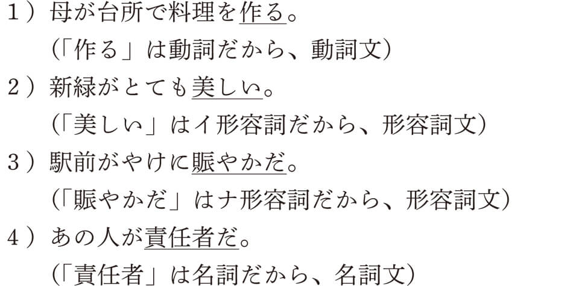ここで、皆さんには見慣れない言葉が出てきましたね。そう、イ形容詞とナ形容詞という言葉です。学校文法では、形容詞と形容動詞と呼びます。日本語文法では、形容詞の連体形（名詞にかかる形）が「～い」、形容動詞の連体形が「～な」となることから、イ形容詞、ナ形容詞と呼んでいます。したがって、本書で形容詞と言う場合、イ形容詞とナ形容詞の両方を意味しますので、注意してください。
さて、日本語文に使われる述語は上の例文で見たように、動詞、形容詞、名詞の３種類だけです。そして、この述語にいくつかの成分がついたのが日本語文ということになります。さっきの例文を成分ごとに分けて表すと、以下のようになるでしょう。
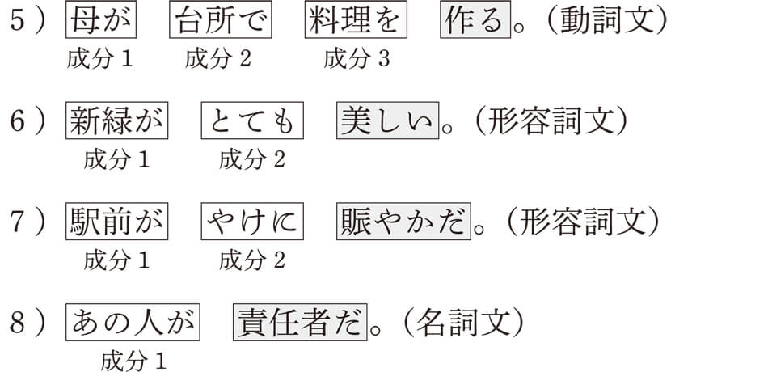５）であれば、「作る」という動詞を中心に「母が」と「台所で」と「料理を」という３つの成分から構成されます。６）であれば、「美しい」というイ形容詞を中心に「新緑が」と「とても」という成分で構成されています。７）であれば、「賑やかだ」というナ形容詞を中心に、「駅前が」と「やけに」という成分です。８）であれば、「責任者だ」という名詞述語に「あの人が」という成分がついているということになるわけです。
いかがですか、単純じゃありませんか。基本的にすべての文は、上に挙げた動詞文、形容詞文、名詞文のいずれかに属するんです。では、ちょっとだけ練習してみましょうか。以下の文は、どのような種類の文なのか、下から適当なものを選んでください。
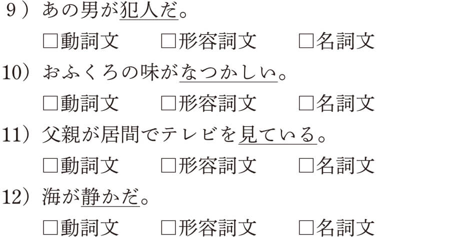９）の述語は「犯人」という名詞からできていますから、名詞文、10）の述語は「なつかしい」というイ形容詞ですから、形容詞文、11）の述語は「見ている」という動詞ですから、動詞文、12）の述語は「静かだ」というナ形容詞ですから、形容詞文ということになります。これらの例文を成分別に表すと、以下のようになります。なお、14）の「の」は名詞と名詞をつなぐ働きがあり、つながれた名詞全体で１つの成分となります。
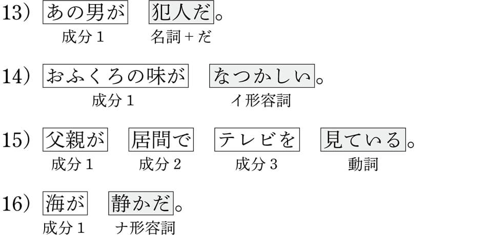日本語の基本的な構造は以上です。いかがでしたでしょうか。もしかすると、読者の皆さんのなかには、主語はどうなっているんだろうと疑問に感じている人がいるかもしれませんね。そうなんです、そこが学校文法と大きく異なるところなんです。では、ここで、少しだけ、学校文法と日本語文法の違いについて説明してみましょう。
学校文法では、「日本語文の基本的な構造は主語と述語からなる」と教えます。皆さんもおそらくそのように覚えたのではないでしょうか。例文１）の「母が台所で料理を作る」で考えると、主語は「母が」で、述語は「作る」であり、この２つが文の要となっていると考えるわけです。このとき、「台所で」と「料理を」は連用修飾成分として、述語にかかるとされます。これを、図式化すると次のようになります。
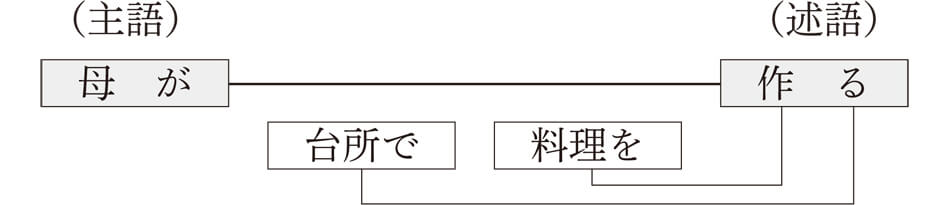学校文法ではあくまで主語と述語という主述関係が文の基本的な構造であるとするわけです。これでどこが間違っているんだろうと思うかもしれませんが、これは大きな間違いなんですね。理由は本書で少しずつ明らかにしていきますが、日本語文法ではどのように説明するかというと、文の要は述語であり、その述語を中心にいくつかの成分が並んでいると考えるのです。学校文法とあまり変わらないと感じるかもしれませんが、そうでもないんですよ。日本語文法の基本構造を図式化すると、以下のようになります。ご覧になってください。
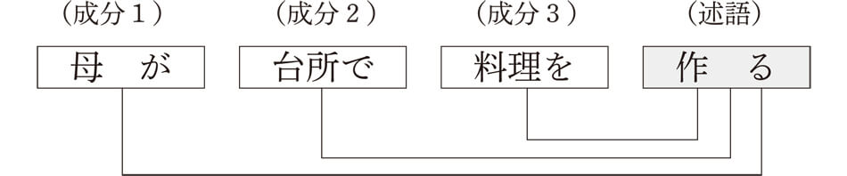おわかりになりましたか。学校文法との違いは、主語の扱い方です。日本語文法では学校文法のように主語を特別扱いしません。いくつかある成分のなかの一つであるという考えです。つまり、「母が」も「台所で」も「料理を」も皆対等な関係で述語と結ばれていると考えるのです。学校文法のように、主語である「母が」が述語と強く太く結ばれているとは考えないんです。もちろん、日本語文法においても主語である「母が」が意味的に重要な役割を担っていることは否定しません。だって、「作る」という動作の主体は「母」なんですから。しかし、それはあくまで意味的な重要性であって、文法的な関係においては、主語だけを他の成分と異なる特別な存在としては認めていないんです。
それでも、読者の皆さんは、「主語－述語」の関係で何が悪いんだ、どこに不都合があるんだ、第一、主語と述語というのは、どの言語にもあるではないか、英語でも主語と述語と言うではないか、などと考えているかもしれません。そうですね、そのように思っても無理はありません。それくらい、主語と述語という関係はくりかえし、学校で教えられてきたものなんです。しかし、主述関係では、日本語の文法体系を正しく説明することはできないんです。どうしてかということは、もう少し先になって説明しますので、ここでは、このような違いがあることだけを理解しておいてくださいね。
ここまで、日本語文の基本的な構造は述語といくつかの成分からなるということを見てきました。では、また、ここで問題です。以下の日本語文は、述語と４つの成分からできていますが、皆さんにはこの文の意味が理解できるでしょうか。
「これじゃあ、わかるわけないよ、第一、カタカナの意味なんか、チンプンカンプンだよ」などという嘆きが聞こえてきそうですね。たしかにこの文は述語と４つの成分からできていますが、これだけでは皆目見当がつきそうにありません。じつは、ここに挙げたカタカナ語はすべてブラジルに関係する言葉なんです。ということは、ブラジルに詳しい人なら、誰でもわかってしまうということになりますが、ブラジルに詳しくなければわからないかというと、そうでもないんですね。上の文に少し手を加えるだけで、この文の意味がたちどころにわかるようになってしまいます。そんな魔法の粉のようなものがあるのかなんて思うかもしれませんが、あるんです。それも、バラバラのひらがな４文字だけです。上の文に、このひらがなを振りかけるだけで、あっという間に文の意味が明らかになってしまうんです。次の文章をご覧になってください。
いかがでしょうか。正確なカタカナの言葉の意味はわからなくても、「ティジュカ」は場所で、「ジョアキン」は食べた人で、「フェジョン」は食べ物で、「シキンニョ」は一緒に食べた相手だと、すぐに理解できるようになったのではありませんか。じつは、この魔法の粉は、格助詞と呼ばれます。最初の例文は、たしかに文の成分が述語とともに提示されていましたが、肝心の述語との関係が不明でした。これでは、単語がバラバラに並んでいるだけで、意味がつながりません。文として成立するためには、それぞれの成分と述語との関係が（これを文法用語で格関係と言います）、はっきりしなければならないんですね。この格関係を示すのが格助詞なんです。もう、皆さんもおわかりのように、格関係を表示する助詞なので、格助詞と呼ばれるわけです。
ところで、この例文の言葉ですが、「ティジュカ」はリオデジャネイロ市内の地区名の一つで以前私が住んでいたところです。「ジョアキン」と「シキンニョ」はブラジル人によくある名前で、私の友人の名前でもありました。「フェジョン」はブラジル人が毎日食べるブラジル料理で、黒豆を塩辛く煮たものを白いご飯にかけて食べます。今でも私の大好きな料理の一つです。
余談はこれくらいにして、先ほどの説明に戻りますが、このように日本語文は格助詞がなければどういう意味なのか不明で文として成立しないことがわかります。日本語文を家に喩えるなら、成分と述語は家の骨組みを作る柱と土台になります。格助詞はそれぞれの柱を土台に固定するためのボルトのようなものです。このボルトがなければ、骨組みとなる柱を組み立てることができません。日本語文においても、格助詞がなければ、それぞれの成分と述語がばらばらに並んでいるだけで、文としてまとまることができないんですね。格助詞というボルトによって、それぞれの成分は述語と結ばれ、そのボルト（格助詞）の種類によって、述語との関係が決定されるわけです。
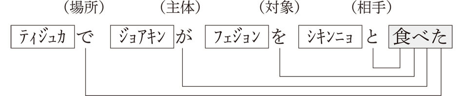「～で」という格助詞は「食べる」という動作がおこなわれる場所を表します。同様に、「～が」は動作の主体、つまり、主語ですね。「～を」は動作の対象、他の言い方で言えば目的語を表します。そして、「～と」は動作を一緒にする相手を表すわけです。
このボルト（格助詞）の種類は全部で９つあり、ガ格、ヲ格、ニ格、デ格、ト格、ヘ格、カラ格、ヨリ格、マデ格と呼ばれます。ガ格は主語、ヲ格は目的語、ニ格は場所や時や到達点、デ格は場所や手段・方法や原因・理由、ト格は相手、ヘ格は方向、カラ格は起点、ヨリ格は起点や比較、マデ格は到達点、などを表します。この９つの格助詞を覚えたいという人には、「鬼までが夜からデート（ヲ/ニ/マデ/ガ/ヨリ/カラ/デ/ヘ/ト）」という語呂合わせがあります。昔の鬼は夜は寝ていましたが、最近の鬼はカラオケへ行ったり、デートしたりと、夜でも忙しいというふうに覚えるといいでしょう。ところで、日本語文法の格助詞は学校文法の格助詞とは少し異なりますので、注意してください。学校文法では、「～まで」は入らず、「～の」と「～や」が入ります。学校文法でも格助詞を覚えるための語呂合わせ、たとえば、「鬼が戸より出、空の部屋（ヲ/ニ/ガ/ト/ヨリ/デ、カラ/ノ/ヘ/ヤ）」などがありますよ。
もう少し、文を構成する成分について考えてみましょう。それぞれの成分は述語との関係において欠くことのできない必須成分とそうではない随意成分とに分かれます。たとえば、先ほどの文で考えると、「ティジュカ」「ジョアキン」「フェジョン」「シキンニョ」という成分のなかで、削除することができない成分が必須成分、削除しても文として成り立つ成分が随意成分であると言うことができます。
このことを一つ一つ確認していきましょう。まず、最初の成分である「ティジュカで」を削除してみます。
「ティジュカで」という成分がなくても、文として問題があるとは感じられませんね。ということは、「ティジュカで」は必須成分ではなく、随意成分と考えることができます。次に、「ジョアキンが」を削除してみましょう。
いかがでしょうか。ちょっと意味が不明ですね。「シキンニョ」と一緒に食べたのは誰なんだろうと思ってしまいます。どうやら、「ジョアキンが」は削除することはできないようです。したがって、「ジョアキンが」は必須成分であると考えることができるわけです。今度は、「フェジョンを」を削除します。
これもよくわかりませんね。何を食べたんだろうと疑問を感じてしまいます。したがって、「フェジョンを」も削除できないことになり、必須成分であると考えることができます。最後に「シキンニョと」を削除してみます。
これは、大丈夫ですね。特に違和感は感じません。したがって、「シキンニョと」は随意成分となります。
以上のことから、「食べた」という述語にとって、「ジョアキンが」と「フェジョンを」は削除することのできない必須成分であることがわかります。
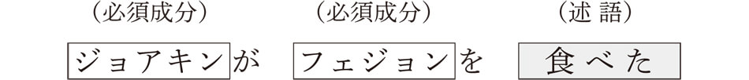じつは、この組み合わせはその他の文にも当てはまります。たとえば、「昨日太郎が食堂で友達とラーメンを食べた」という文でも、基本となる組み合わせは「太郎がラーメンを食べた」であり、「昨日」「食堂で」「友達と」は消去しても文として成立することができます。日本語文法では、このような必要最小限の組み合わせのことを文型と呼んでいます。これまでに見てきた「食べた」という述語であれば、以下のように表すことができます。
つまり、「食べる」という動詞にとって、「～が」と「～を」という組み合わせ（文型）は絶対にはずすことのできない枠組みとしてとらえることができるわけです。これに対し、随意成分は絶対に必要であるというわけではありませんが、文型によって示される最低限の情報に、さらに詳しく説明するために付け加えられていると言っていいでしょう。このことを、もう一度全体を示しながら表すと以下のようになります。
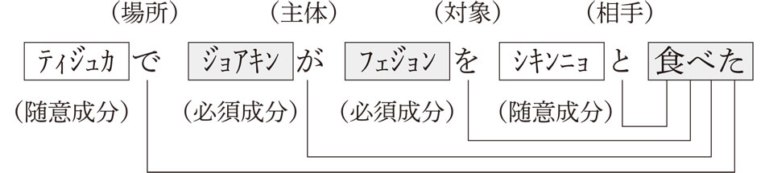私たち日本人は子供の頃から父親や母親をはじめとする多くの日本人のなかで育てられ、そこでの会話を通じて自然にこの組み合わせを身につけていくんですね。「食べる」という動詞であれば、自然に「～が～を食べる」という文型が頭の中に入っているわけです。「食べる」と同様に、「飲む」や「作る」などの動詞も、「～が～を飲む」「～が～を作る」という組み合わせで考えることができます。このように考えると、日本語のすべての述語にはそれぞれの組み合わせが存在すると言えるのです。
じゃあ、述語の数だけ文型があるのかと思うかもしれませんね。そうですね、基本的には述語の数だけ文型は存在することになります。そうすると、数の上では何万という文型があるわけですが、よく考えてみると同じパターンの組み合わせがたくさんありますから、それらを一まとめにすることができます。そうすると、せいぜい何十という数の組み合わせになります。たとえば、先ほど紹介した「～が～を食べる」「～が～を飲む」「～が～を作る」という３つの文型は、「～が ～を 動詞」という文型にまとめることができるわけです。思ったほど多くはなく、ちょっと安心しましたか。ただ、気をつけてほしいのは、文型に使われる必須成分はここに見た「～が」と「～を」だけでなく、その他の格助詞も使われるということです。これについては、次の項で詳しく見ていくことにしましょう。
ここまでに、日本語の基本的な構造は述語を中心に複数の成分からなり、それぞれの成分と述語との関係は格助詞によって示されるのを見ました。そして、それらのなかには述語にとって欠くことのできない必須成分があり、この述語と必須成分との組み合わせを文型と呼びました。では、この文型にはどのような種類があるのでしょうか。前項では、「～が～を食べる」「～が～を飲む」「～が～を作る」という組み合わせを見ました。これらの文型は、「～が ～を 動詞」という文型として考えることができます。
いわゆる目的語を取る動詞がここに含まれます。その他にも、「～が～を見る」「～が～を聞く」「～が～を読む」「～が～を書く」「～が～を着る」「～が～を脱ぐ」「～が～をたたく」「～が～を壊す」「～が～を持つ」など、数多く存在します。
さて、ここまで来ると、勘のいい読者には疑問が生じているかもしれませんね。「～は」はどうなっているんだろうかという疑問です。この文型は、「～は ～を 動詞」のほうが正しいのではないか、「見る」なら「私が富士山を見る」より、「私は富士山を見る」のほうが言いやすいし、実際そっちのほうを使っているのではないだろうかという素朴な疑問ですね。じつは、その通りなんです。実際には、「～が」より「～は」の使用のほうが圧倒的に多いんです。では、どうして「～が」ではなく「～は」を使った文型にしないのかと言うと、「～は」は格助詞ではなく、ある特別な働きを持った助詞だからなんです。今ここで見ている文型は格助詞によって構成されますが、格助詞というのは述語とそれぞれの成分とをつなげる役目を担ってましたね。これに対し、「～は」は文の主題を表します。主題というのは、文の成分のなかから話題の中心として特に選ばれた成分で、述語との関係で決定されるわけではないのです。この主題については、次の章で詳しく説明しますので、とりあえずここでは主語は「～が」と思っていてください。
では、文型の話に戻りますが、動詞について見れば、「～が ～を 動詞」の他にも「～が 動詞」「～が ～に 動詞」「～が ～と 動詞」「～が ～を ～に 動詞」などがあるんです。ちょっと確認してみましょうか。次の動詞に当てはまる文型を右から選んでください。まずは自分でやってから、下の解説に進んでくださいね。
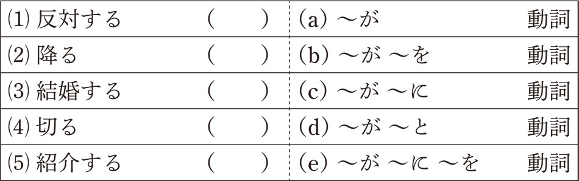いかがでしたか。簡単にできましたか。最初の「反対する」は、「野党が与党案に反対する」など、ニ格が必要になりますね。したがって、（c）になります。次の「降る」は「雨が降る」などと言いますね。ガ格以外には特に必要な格はありませんから、（a）ですね。「結婚する」は、相手がいなければ結婚できません。相手がト格で表されますので、（d）ですね。「太郎が花子と結婚する」などと言います。「切る」は「子供が紙を切る」などと使います。目的語がヲ格になりますから、（b）になります。最後の「紹介する」は、紹介する人、紹介する相手、紹介される人の３つの格が必要となるので、（e）になります。「太郎が次郎に花子を紹介する」などと言います。この場合、ニ格とヲ格の順番はどちらでもかまいません。
私たちは、日本語を組み立てるとき、このようなパーツの組み合わせ、つまり、文型を基に文を作っているのです。たとえば、「○○党が××党と国会で与党案に反対する」では、「○○党が与党案に反対する」という文型の上に「国会で」と「××党と」という随意成分を加えて、文として成立させていると考えることができるのです。
述語は動詞の他にも、形容詞や名詞述語がありましたね。もちろん、これらの述語にも文型は存在します。「～が イ形容詞」「～が ～に イ形容詞」「～が ナ形容詞」「～が ～に ナ形容詞」「～が 名詞＋だ」などです。先ほどと同様に、次の述語に当てはまる文型を右から選んでみてください。
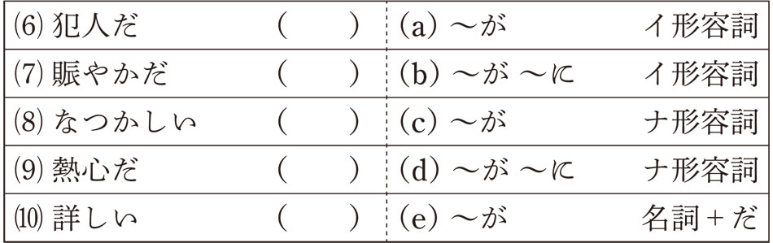最初の「犯人だ」は名詞述語で、ガ格以外には特に必須成分は必要ありませんね。したがって、（e）となります。「あいつが犯人だ」などと言いますね。次の「賑やかだ」はナ形容詞で、この述語にもガ格以外の必須成分は必要ないですね。「家の近くが賑やかだ」などと言いますので、（c）になります。「なつかしい」はイ形容詞で、「故郷がなつかしい」なんて言えますから、（a）になります。「熱心だ」はナ形容詞で、「父親が教育に熱心だ」なんて言えますね。この場合、「父親が熱心だ」だけでは何に熱心なのかわかりませんから、ニ格は必ず必要となります。したがって、（d）になります。最後の「詳しい」はイ形容詞で、「夫が詳しい」だけでは意味不十分ですから、「夫がパソコンに詳しい」などとニ格が必要となり、（b）になります。
この問題では、ナ形容詞と名詞の区別がよくわからなかった人もいたかもしれません。イ形容詞は必ず「～い」となるのでわかりやすいですが、ナ形容詞も名詞述語も「～だ」となり、一見区別が難しいですね。区別する簡単な方法は、連体形（名詞にかかる形式）にしたときに、「の」が現れるのが名詞で、「な」が現れるのがナ形容詞となります。上の例では、「犯人だ」は、「犯人の男」とすると、「の」が現れますね、したがって、名詞です。一方、「熱心だ」では、「熱心な父親」とすると、「な」が現れます。したがって、ナ形容詞ということになります。
ということで、ここまでやってきた文型をまとめると、次の表のようになります。
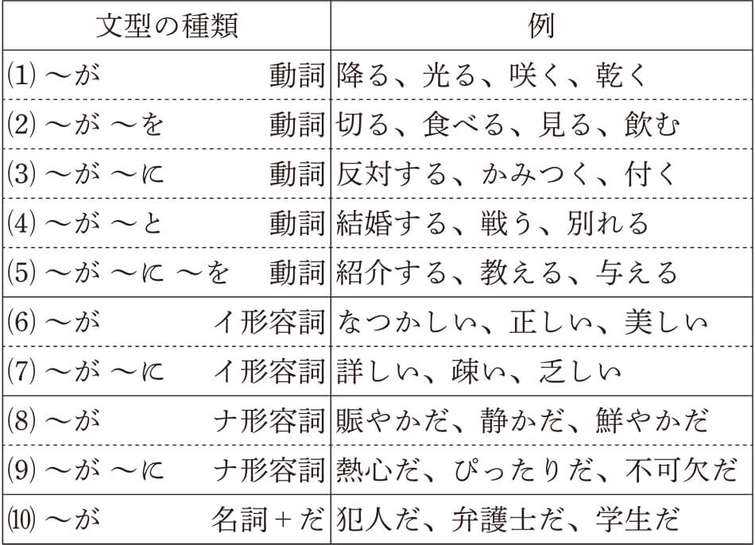ここに挙げた文型は基本的なものだけで、すべてではありませんが、これだけでかなりの述語をカバーできます。じつはこの述語と格助詞との組み合わせは読者の皆さんの頭の中にすべて入っているものです。ですから、助詞を間違えることなく正しい日本語を話しているわけです。これが、文法のルールなんですね。外国人が間違った日本語を使うのは、この組み合わせがしっかりと身についていないからです。たとえば、「太郎が花子を結婚する」とか「兄がテニスで夢中だ」など、文型の知識がないために間違った格助詞を使ってしまうんですね。私たち日本人は無意識にこの組み合わせを応用して、日本語を組み立てているわけです。
読者の方のなかには、格助詞なんか使わなくても話は通じるんじゃないかと思われる方もいらっしゃるかもしれません。たしかに、それは事実です。たとえば、友人に「ねえ、お昼、何、食べた？」なんて聞いたりしますよね。「食べる」の文型は「～が ～を 動詞」ですが、「～が」も「～を」も使われていません。それどころか、主語である「あなた」も表されていません。これはどうしてでしょうか。
じつは、日本語の会話ではわかっていることは省略することができます。先ほどの文は文型的には「あなたがお昼に何を食べたか」であり、「あなたが」は相手に話していることは明白なので言う必要はなく、「お昼に」の「～に」、「何を」の「～を」も述語との関係がはっきりしているので、省略されています。最後の「～か」も、イントネーションが上がることで疑問文であることがわかりますから、なくても大丈夫なんですね。このように、会話では理解できるものはどんどん省略されますが、だからといって、文型が無視されているわけではないので、この点には注意してください。
▲